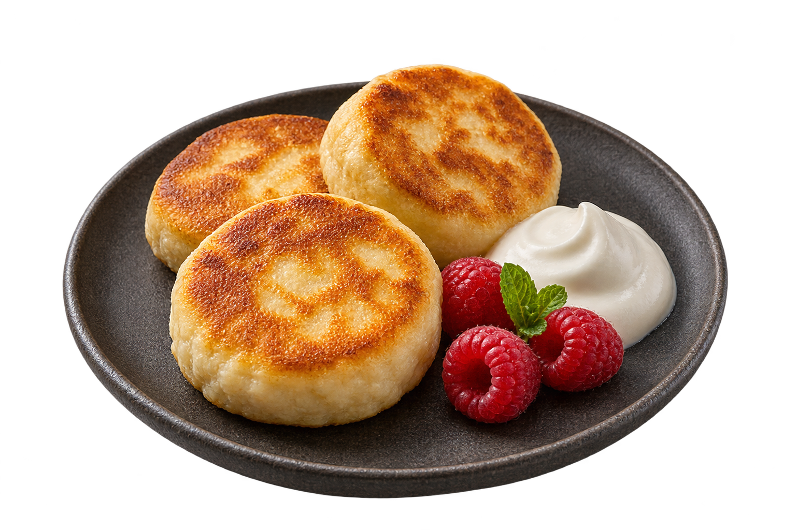

Кола з льодом
Холодна. Газована. Класика.
Та сама, з якої все починається.
← Свайпай. Обирай свою. →
Демонстраційний склад. Остаточні інгредієнти й алергени потребують підтвердження за рецептурою та етикетками продуктів.
М’яка булочка. Гаряча сосиска.
І той самий останній хрумкий шматочок.
Приклад: булочка бріош, сосиска, маринований огірок, хрустка цибуля, кетчуп, гірчиця.
Попередні алергени: пшениця (глютен), молоко, яйця, гірчиця. Склад сосиски та інших продуктів потрібно підтвердити.

До шаурми. До розмови.
Просто тому, що хочеться.
Холодна. Газована. Класика.
Чай, лід і трішки літа.
Просто вода. Просто добре.
Напої та їхній склад — приклади для макета; бренди й асортимент ще не затверджені.
Бо «я вже наївся»
не стосується десерту.

Ніжні всередині. Золотисті зовні.
Приклад: кисломолочний сир, яйце, пшеничне борошно, цукор; сметана та ягоди для подачі.
Попередні алергени: молоко, яйця, пшениця (глютен).

Знайомий з дитинства. Ще один шматочок?
Приклад: вафельні коржі, варене згущене молоко, вершкове масло.
Попередні алергени: молоко, пшениця (глютен). Яйця, соя та інші алергени — залежно від коржів; перевірити етикетку.